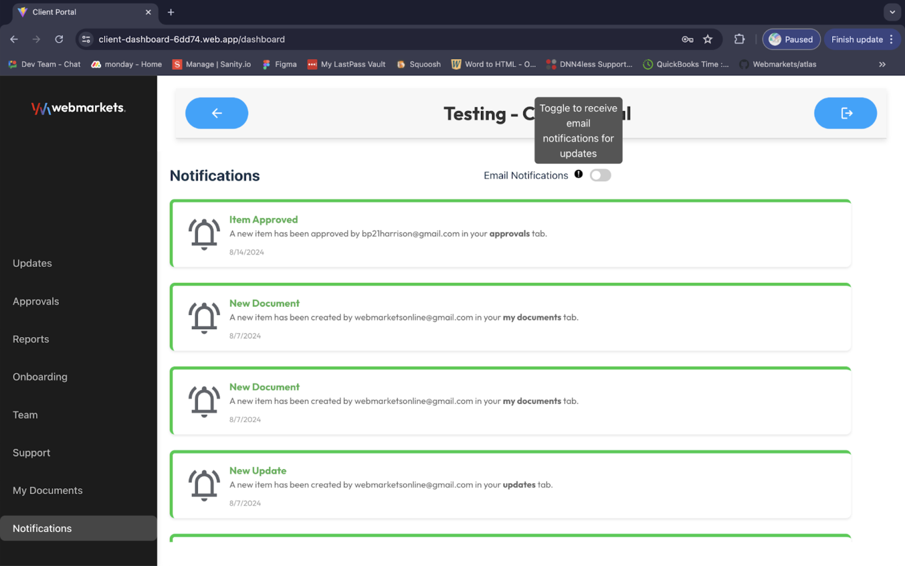
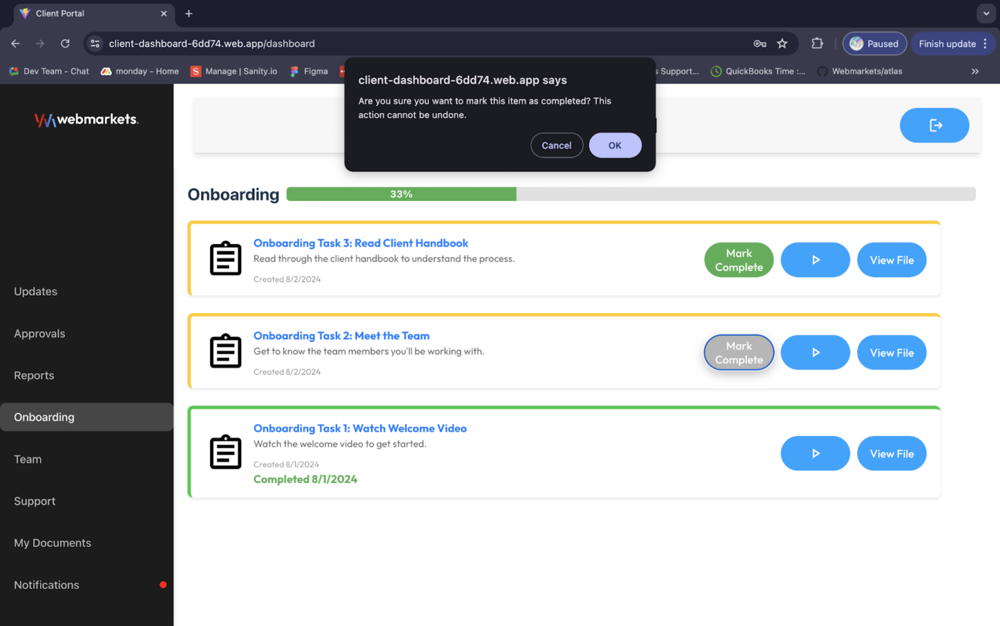
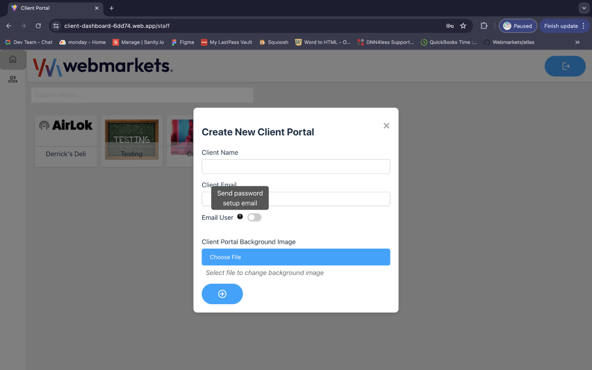
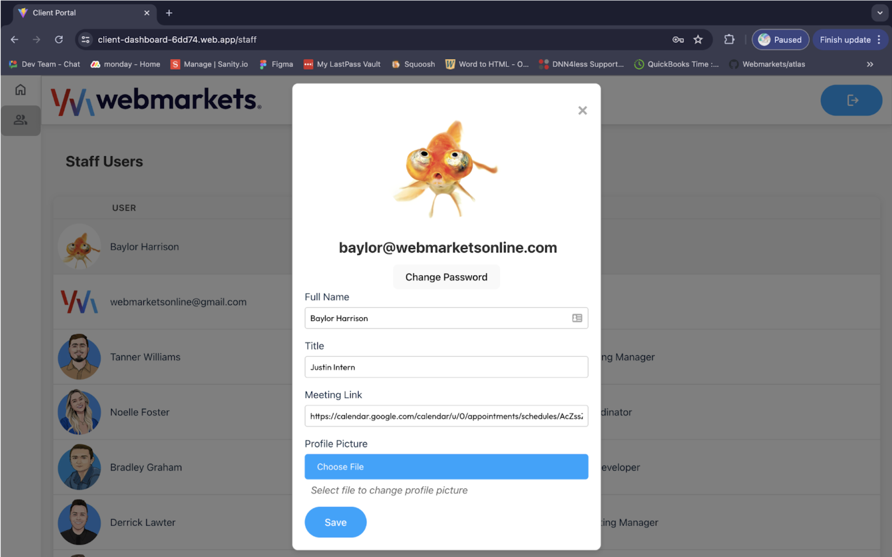

Digital agency · 2024 internship
A shared place for client work.
The first client portal for an agency’s communication and project workflows.

Client updates feed from the original 2024 portal. Personal details and profile illustrations are covered.
The context
A problem worth solving.
An agency needed a central platform for client communication.
My contribution
What I brought to the work.
Independently developed the first version, working with the lead developer on setup and CSS and collaborating on the visual direction.
The product
What it makes possible.
Original project / selected screens & walkthrough
The original project imagery and product explanation are retained here. These are historical project materials; current availability may differ.

A shared client workspace
A central interface brings client communication and project information together.

Sign-in and notifications
The application connects account access with the relevant client experience and updates.

Client onboarding
An onboarding workflow creates a new client portal and its account.

Staff visibility
The staff dashboard organizes client portals and their associated information.

Profile management
Staff can maintain their profile information within the application.
Where it stands
The work keeps moving.
This project remains part of the earlier-work collection. The original materials show the implementation at that point in time; they are not a claim about current operation.